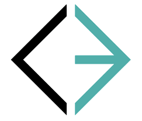
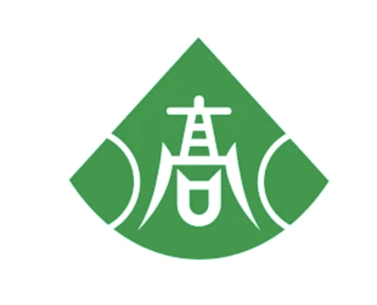
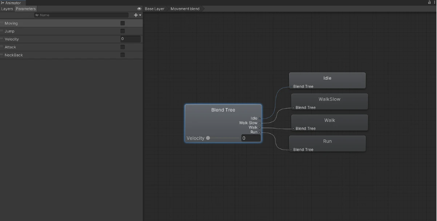
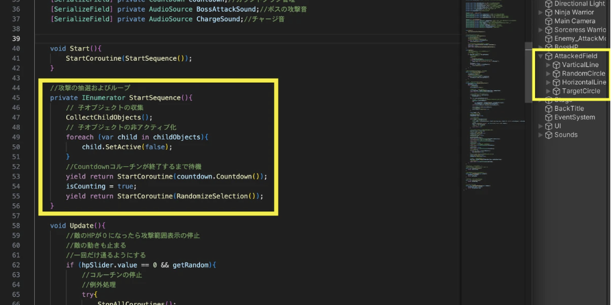
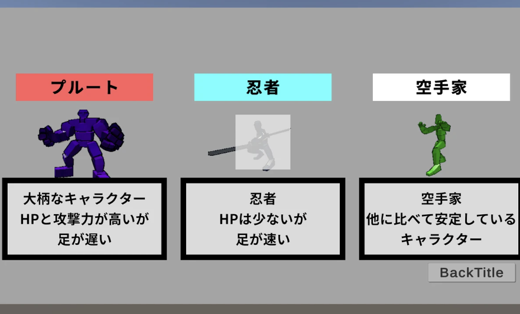

伊澤 捷
愛知工業大学大学院
愛知工業大学大学院




Unity / C#
ボス戦に特化した3Dアクションゲーム。ステートマシンを利用したボスの行動パターン制御や、BlendTreeを活用した滑らかなアニメーション遷移を実装しました。
詳細を見る →
Unity / VRChat SDK
自身のYouTubeラジオ番組「電脳九龍城」の収録用仮想空間スタジオ。配信映えするライティングなど、実際の運用を想定した空間設計・ギミック実装を行いました。
詳細を見る →
Unity / Modular Avatar
ハンドジェスチャーをトリガーに発動する変身エフェクト。Modular Avatarを活用し、他のアバターにも容易に導入できる非破壊セットアップを実現しました。
詳細を見る →このゲームは、短時間で繰り返し遊べることを重視し、プレイするたびにランダムに行動パターンが変化するため、毎回新鮮な気持ちで楽しめます。
小さい頃にハマったアクションゲームに影響を受け開発しました。

アニメーションを再生するときにBlendTreeを利用することで滑らかにアニメーションが遷移するようになっている。

図の黄枠のように敵の攻撃手段をリストで管理しているので、AttackedFieldの子オブジェクトに敵の攻撃手段を追加することによって簡単に敵が追加した攻撃を行ってくれるようになる。

敵のHPが７以下になるともともと１つの攻撃しか行っていなかった敵が同時に2種類の攻撃を発動するようになる。そうすることでプレイヤーが敵の攻撃を回避することが難しくなりゲーム終盤になることでより緊張感が増すようになっている。

Classを用いキャラクターを選択できるようにしました。PlayerFabsを用いて簡易的なセーブを行いました。キャラクターはそれぞれ足の速さやHP、攻撃力が違うようになっています。キャラクターを選択できるようにすることで遊びの幅が増加しました。

キャラクターシステムのようにClassを用いて装備システムを作成しました。それぞれの装備がプレイヤーのステータスに影響し、ゲームの攻略手段が増加した。
このラジオはメインパーソナリティの二人がカオスなメタバースの素晴らしさを世に広めていくために、様々なトークテーマでひたすら喋り倒す番組となっております。
かつて香港にあった九龍城砦をイメージし、薄暗くスラムっぽい雰囲気を醸し出した
長年使われた蛍光灯を彷彿とさせる定期的に点滅するようなライティングを使用
YouTubeでの配信を想定し、BGMの切り替え、タイマーなどを操作できるコントロールパネルをU#で実装し、VR空間内でも直感的に操作できるUIで作成しました。しかし、配信を重ねていくうちにOBSで操作したほうが良いことに気づきあまり使われていません。